Gallery
Residential and commercial‑scale projects in Perth.
We involve clients in the design process, using 3D visualisation to develop exciting design solutions for your project.
We aim for great spaces, wonderful light, a room with a view… and economic and delightful solutions in touch with both nature and the market.
Recent work
Projects under construction and completed around Perth.
Highlights
A selection of homes and visualisations from the practice.
Renovations & 3D
Coolbinia: renovations and a new kitchen arrangement. Wembley: elegant and spacious, shown here in 3D visualisation and now under construction. Art Deco extensions with alfresco space and bay windows.
Inner city
Inner city visualisation, Northbridge, and apartment upgrade documentation.
Green Gables
Even traditional can be fantastic… with space for the studio.
Design for solar
The wow factor: designing for sun and light in Wembley.
Art Deco
Opening up for light and views to the garden, including new kitchen and bathroom arrangements.
Interiors
Wonder kitchen, bathing and fit-out in the hills: great kitchen space, a modern bathroom and a holiday-resort feel.
Mining
Yandicoogina mining site infrastructure, roadways, services and accommodation. Construction completed 2011.

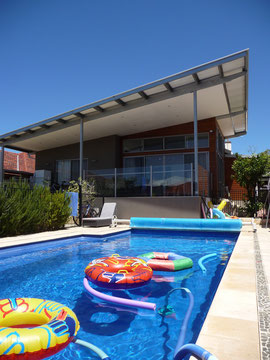

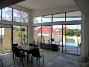

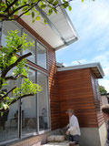

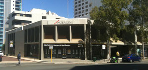

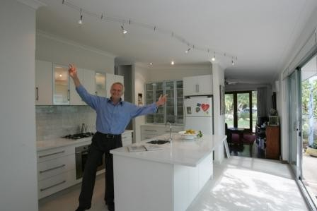

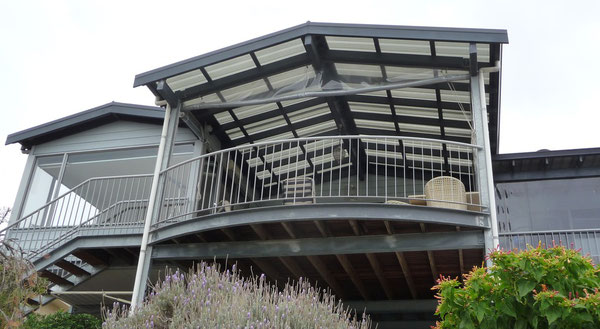

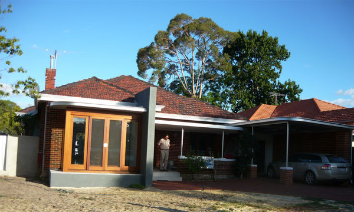

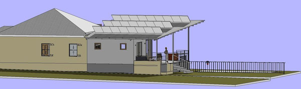

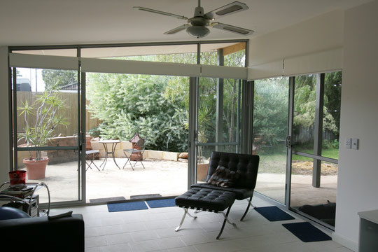

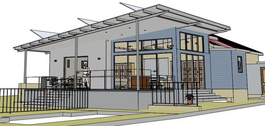

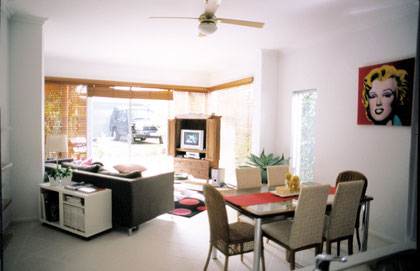

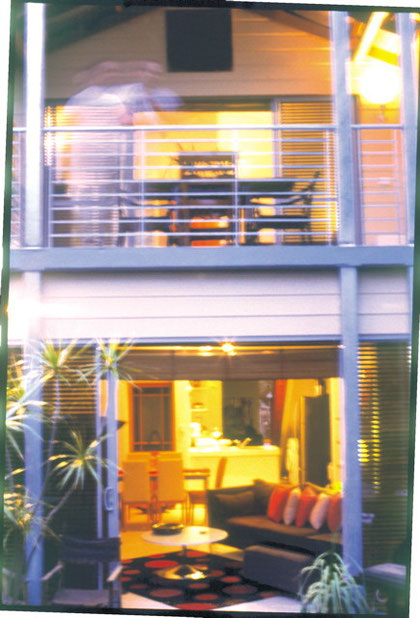

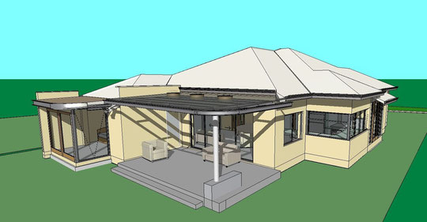

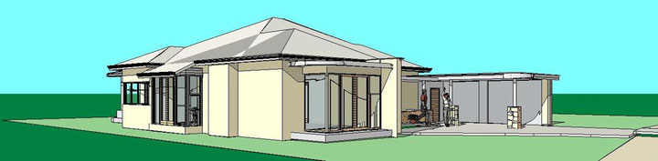


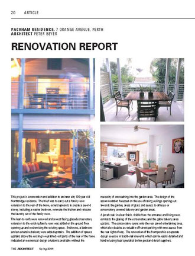

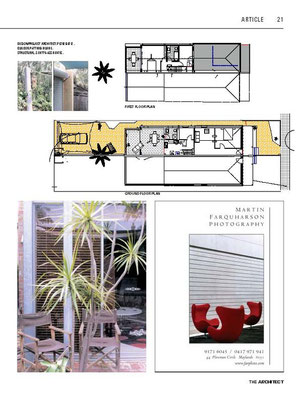

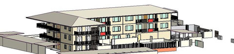

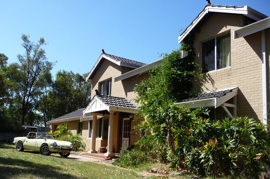

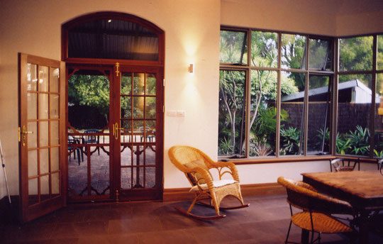

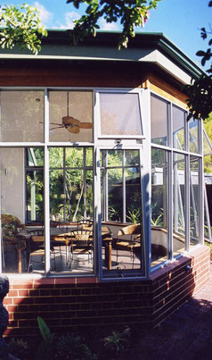

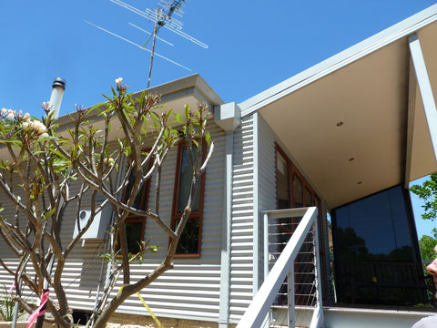

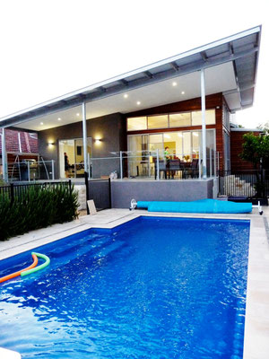

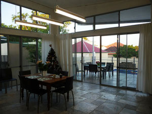

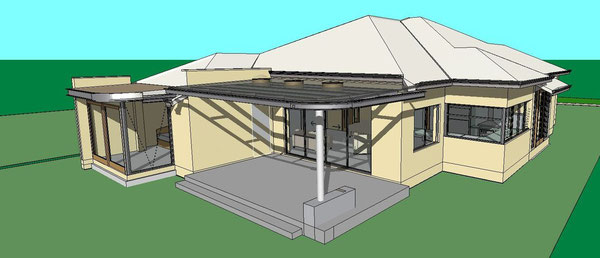

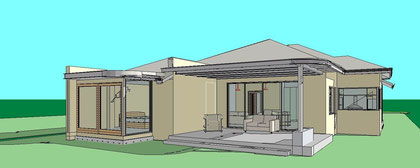

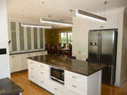

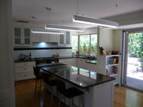

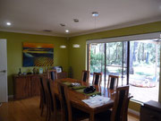

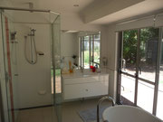

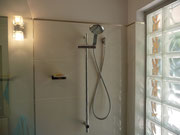

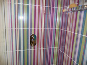

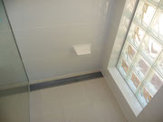

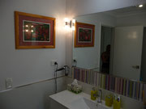

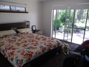

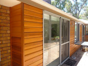

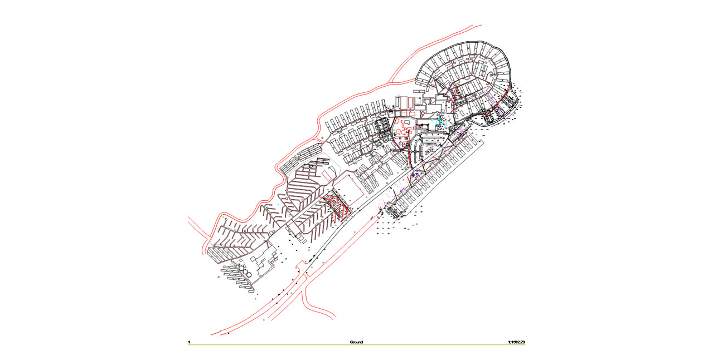
About Peter
Peter Beyer Architect is qualified as an architect with the Australian Institute of Architects, with previous overseas experience and British Royal Institute of Architects and Berlin Architektenkammer affiliations.
Design
High quality, good value, efficient construction and green environmental design.
Works
From residential and commercial to complex institutional projects, mining infrastructure and accommodation.
Additional expertise
- Specialist progress and construction advice and reports
- Dilapidation surveys
- Pre-purchase and owner-builder insurance inspections, metropolitan and country
“Listen to many, speak to a few.” — William Shakespeare

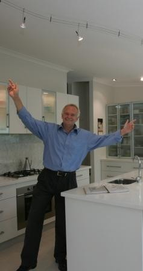
News, views & graphics
Projects under construction and completed.
In the hills: new regulations regarding Bushfire Attack Levels (BAL) affect construction in fire zones. Adjacent fuel loads affect new construction standards.

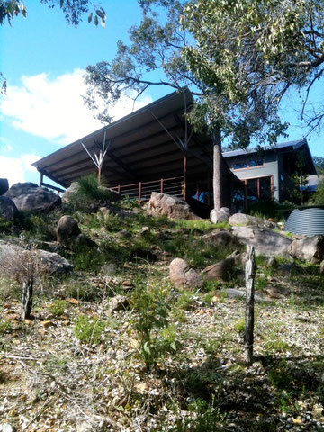

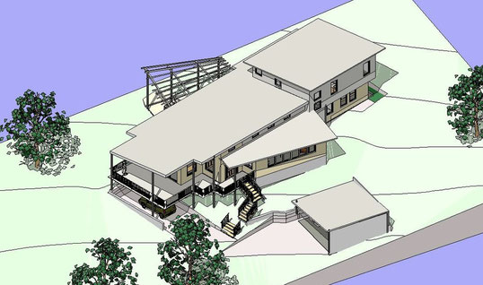

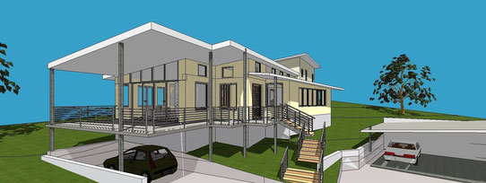

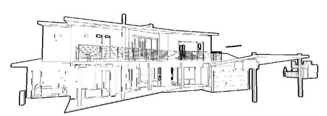
Guestbook
Nice web page, Pete. Get some architecture in there! This is where photos become invaluable.
— Pat, August 2011
Cool! Looks fabulous!
— Corinne Coombs, August 2011


Contact
Let’s talk about your project
Ring for an initial discussion. Peter is happy to talk through home plans, renovations, extensions and commercial work.
- Mobile0411 323 296
- Office08 9274 3253
- Based inPerth, Western Australia